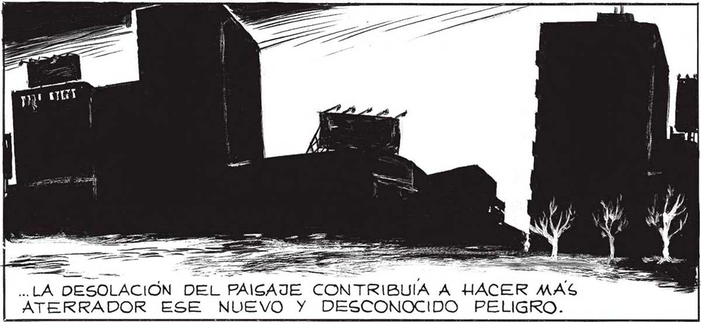
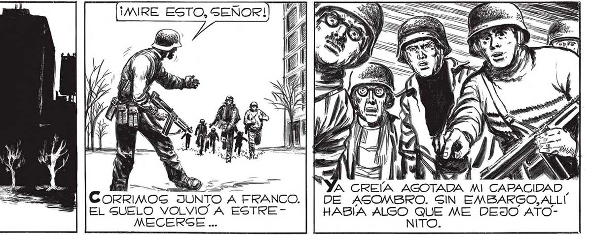
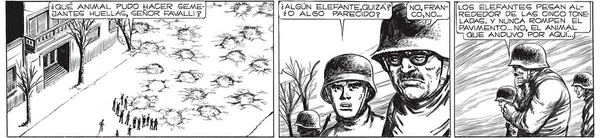
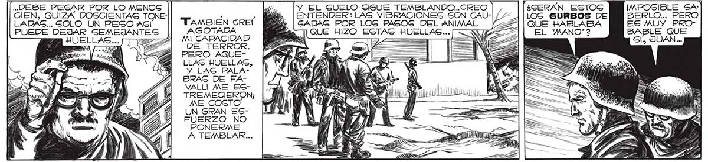

190 ¡MIRE ESTO, SEÑOR! — a LA DESOLACIÓN DEL PA ATERRADOR ESE NUEVO Y DESCONOCIDO PELIGRO. 'A CREÍA AGOTADA MI CAPACIDAD , DE ASOMBRO. SIN EMBARGO, ALLI HABÍA ALSO QUE ME DEJO ATONITO. CORRIMOS JUNTO A FRANCO. EL GUELO VOLVIO A ESTREMECERGE ... GÍA JANTES HUELLAS, GENOR FAVALLI 2 2 ¿ALGÚN ELEFANTE, QUIZA? NO, FRAN-| [[LOS ELEFANTES PESAN AL¿O ALGO PARECIDO? PE REDEDOR DE LAS CINCO TONE: LADAS. Y NUNCA ROMPEN EL CIA , PTA APA ..DEBE PESAR POR LO MENOS » Y EL SUELO Gl6UE TEMBLANDO... CREO | , ¿GERÁN ESTOG IMPOSIBLE SA CIEN, QUIZA DOSCIENTAS TONE- , , Má | ENTENDER:LAS VIBRACIONES GON CAU-|/1- ]|LOS GURBOS DE BERLO... PERO LADAS... SOLO UN PESO AGÍ “TAMBIEN CREI y | CADAS POR LOG PASOG DEL ANIMAL 224] | QUE HABLABA PUEDE DEJAR SEMEJANTE AGOTADA QUE HIZO ESTAS HUELLAS... , HUELLAS... TT 4 MI CAPACIDAD Pe : -. DE TERROR. [E PERO AQUELLAS HUELLAS, | Po — E = RE Y LAS PALA- a LA IA A ATA BRAG DE FA- SN NE 1 S A sen VALLI ME ES- SES CLON a y TREMECIERON; | M1 A SA W IA. ME COGTO il WMA >= UN GRAN EG- JAVA FUERZO NO : ' PONERME A TEMBLAR... A k e — NA — de



